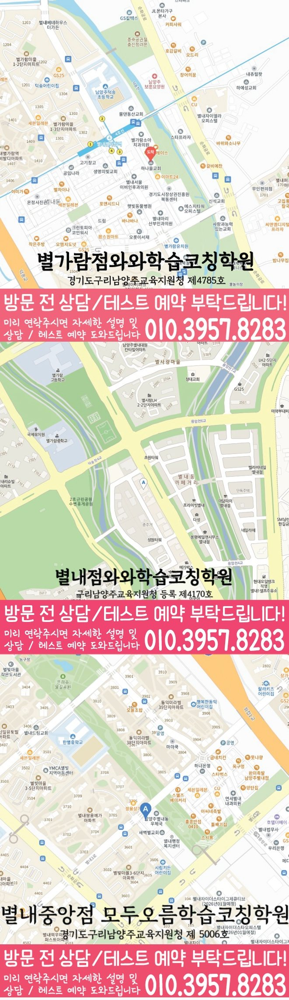

30초 핵심 안내
별내신도시 영수학원 선택 전 확인할 기준
별내신도시 영수학원은 초3~초6, 중1~중3, 고1~고3 학생의 영어·수학 시작점, 학교 과제, 오답과 복습 기록을 함께 보는 지역 안내입니다. 주간 영어·수학 학습량과 점검 일정을 상담 기준으로 삼고, 경기 남양주시 순화궁로 349 삼광프라자 501호의 제공 센터 정보와 학교 자료만 사용했습니다.
English & Math Learning Guide
별내신도시 영수학원 선택 전 초3~초6, 중1~중3, 고1~고3 학생의 학교 진도, 영어·수학 상태, 영어 이해 과정과 수학 풀이 과정의 구분, 통학과 상담 기준을 확인하세요.
30초 핵심 안내
별내신도시 영수학원은 초3~초6, 중1~중3, 고1~고3 학생의 영어·수학 시작점, 학교 과제, 오답과 복습 기록을 함께 보는 지역 안내입니다. 주간 영어·수학 학습량과 점검 일정을 상담 기준으로 삼고, 경기 남양주시 순화궁로 349 삼광프라자 501호의 제공 센터 정보와 학교 자료만 사용했습니다.
수업 안내 이미지

센터 위치 안내

별내신도시에서 영수학원을 비교하는 가장 구체적인 방법은 장기 회상과 잦은 과목 전환이 겹친 학생의 영어·수학 결과물을 같은 주간표에서 대조하는 것입니다. 학부모가 살펴볼 대표 유형은 중학생 가운데 영어와 수학 모두 배운 날에는 알지만 일주일 뒤 회상률이 크게 낮아지는 학생이며, 공부 시간을 길게 잡고도 과목을 자주 바꾸어 몰입이 끊기는 편입니다. 두 과목에 걸친 어려움이므로 영어 복습 간격과 수학 단원 누적을 각각 다른 자료로 확인하며, 장기 회상 보완 기준과 잦은 과목 전환 조정 기준은 서로 다른 자료에서 확인합니다. 따라서 이곳에서 학습시간관리를 확인할 때는 시간·페이지·문항·단원 가운데 추적할 단위와 대상 기간을, 예정량과 실제 완료량·달성률의 분모와 완료 기준을, 차이가 난 원인을 기록하고 다음 분량·기한을 조정하는 규칙을 나누어 살펴봐야 합니다. 결과를 앞세운 설명보다 학부모가 영어·수학 수업 전후에 중학생이 배운 내용을 말로 풀어내는지와 과제 이행, 재풀이 기록을 비교하도록 구체적인 기준을 정리합니다.
경기 남양주시 별내신도시에서 영수학원을 살필 때에는 과목명만 비교하기보다 실제 이동 경로와 가능한 수업 학년을 함께 확인해야 합니다. 제공된 센터 위치는 경기 남양주시 순화궁로 349 삼광프라자 501호입니다. 영어·수학 공통 가능 학년은 초3·초4·초5·초6·중1·중2·중3·고1·고2·고3입니다.
별내신도시의 학교 참고 목록은 샛별초·화접초·별가람초·한별초·덕송초·별가람중·한별중·한삼중·별가람고·별내고·한삼고·퇴계원고·청학고입니다. 학교 이름을 반복해 홍보하기보다 현재 범위와 학생의 풀이 기록을 함께 확인해야 과목별 학습 순서를 현실적으로 정할 수 있습니다.
별내신도시 수업 안내의 기준 센터는 와와학습코칭센터 별내점이며 자료에 기재된 등록 정보는 구리남양주교육지원청 등록 제4170호입니다. 상담 전에는 주소·학년·교습비를 함께 대조해 실제 등원 조건을 판단합니다.
별내신도시에서 진단 내용을 들을 때는 넓은 수준 평가보다 다음 수업의 구체적인 행동이 제시되는지를 살펴보세요. 학부모는 진단표가 자녀에게 붙는 평가가 아니라 다음 수업의 행동을 정하는 근거인지 살펴봐야 하며, 중학생의 진단은 장기 회상 보완 단서와 잦은 과목 전환 실행 결과를 구분합니다.
지역의 학교 학습 계획에서는 별가람중에서 받은 최신 범위 안내를 기준으로 삼습니다. 중학생의 보호자는 과거 사례만 보고 이번 시험의 난도나 문항 유형을 단정하지 않습니다. 한별중 학생의 경우에도 상담은 확인된 범위표와 교재를 중심으로 진행해야 과목별 계획이 막연해지지 않습니다. 이동 계획에 사용할 주소는 '경기 남양주시 순화궁로 349 삼광프라자 501호'이며, 별내신도시의 이동 조건은 가정별 실제 일정으로 다시 확인합니다. 학생의 통학 조건은 실제 출발 시각과 수업 종료 시각으로 살펴봐야 하며, 별내신도시 학생의 등하원 계획은 확인한 시간표와 분리해 기록합니다. 시험 범위가 정해진 뒤에는 별내신도시 학생의 남은 날짜를 영어 회상, 수학 오답 재현, 학교 과제 시간으로 나누어야 합니다.
첫 번째로, 상담에서는 시간·페이지·문항·단원 가운데 추적할 단위와 대상 기간을 학습시간관리의 확인 항목으로 물어봅니다. 둘째, 예정량과 실제 완료량·달성률의 분모와 완료 기준을 중심으로 학습시간관리 설명이 학생의 계획과 연결되는지 묻고, 다음 점검 때 무엇으로 확인할지 상담 메모에 남길 만큼 답변을 구체화합니다. 세 번째로, 중학생에게 맞는지 판단하려면 차이가 난 원인을 기록하고 다음 분량·기한을 조정하는 규칙을 구체적으로 물어 기준 단위·분모·기간과 계획 조정의 적용 범위와 미확인 항목을 구분합니다. 이 확인 과정을 거치면 학습시간관리의 기준 단위·분모·기간과 계획 조정 가운데 확인된 내용과 중학생에게 아직 적용할 수 없는 내용을 구분할 수 있습니다.
영어는 어휘 점수만 보지 말고 틀린 단어가 문장 해석과 쓰기 과제에서 다시 확인되는지를 살펴야 하며, 중학생의 영어 과제에서는 복습 간격 점검 결과와 잦은 과목 전환 실행 여부를 구분합니다. 중학생의 영어에서는 이 생활권 수업이 선택한 답의 근거와 해석 이유를 다시 묻는지 살펴보세요. 특정 교재를 전제로 삼기보다 영어 기록에서 어휘와 구문, 내용 파악의 소요 시간을 나누는 편이 정확하며, 장기 회상 보완은 전체 학습 자료에서, 영어 복습 간격은 영어 결과물에서 따로 살핍니다.
학생의 수학 학습관리 기록에는 틀린 문항 번호뿐 아니라 첫 시도와 두 번째 시도의 풀이 차이가 남는 편이 좋으며, 장기 회상 보완은 전체 학습 자료에서, 수학 단원 누적은 풀이 결과에서 따로 살핍니다. 중학생의 보호자가 물어볼 것은 푼 문항 수가 아니라 같은 실수를 다시 하지 않고 풀이를 설명할 수 있는지입니다. 수학의 선행 여부는 학생이 이전 단원 핵심 문제를 스스로 완결하는지 보고 판단해야 하며, 수학 단원 누적 점검 결과와 잦은 과목 전환 조정 기록은 따로 남깁니다.
가정의 역할은 영어와 수학을 다시 가르치는 것이 아니라 학생이 세운 계획과 실제 기록 사이의 차이를 짧게 확인하는 데 있고, 가정에서는 장기 회상 보완 기록과 잦은 과목 전환 실행 여부를 서로 다른 질문으로 확인합니다. 이 구분이 지켜져야 수업 기록이 가정의 감시 도구가 아니라 학생의 자립을 돕는 정보로 쓰이며, 보호자가 볼 항목은 장기 회상 결과와 잦은 과목 전환 조정 과정으로 나누어야 합니다.
학습시간관리의 기준 단위·분모·기간과 계획 조정을 다시 볼 때는 시간·페이지·문항·단원 가운데 추적할 단위와 대상 기간을 최신 안내와 대조하고, 차이가 난 원인을 기록하고 다음 분량·기한을 조정하는 규칙을 학생의 기록에서 재확인해야 합니다. 중학생의 보호자는 점수 한 줄 대신 질문 표시, 풀이 완결, 시작 습관, 오답 재현을 나누어 점검할 수 있습니다. 마지막에는 넓은 장점 표현보다 학생이 유지할 행동 하나와 다음에 바꿀 행동 하나가 남는지 점검해 보되, 다음 계획에는 장기 회상 보완 일정과 잦은 과목 전환 조정 시점을 따로 표시합니다.
Information Basis
센터명·주소·등록번호·학교 참고 목록은 제공 자료 범위에서 확인했습니다. 실제 수업 가능 학년과 과목, 시간표는 상담 시점에 다시 확인해야 합니다.
FAQ
학생의 최근 영어 지문과 수학 오답, 사용 중인 교재, 일주일 과제 기록을 준비하면 좋으며, 상담 기록에는 장기 회상 결과와 잦은 과목 전환 실행 시점을 따로 남깁니다. 상담에서는 영어와 수학 모두 배운 날에는 알지만 일주일 뒤 회상률이 크게 낮아지는 상태를 점수 한 줄보다 구체적으로 설명할 수 있고, 확인 질문도 학생의 상황에 맞게 바꿀 수 있고, 준비한 자료에서 장기 회상 보완 단서와 잦은 과목 전환 조정 단서를 구분합니다.
두 과목을 같은 문제 수로 맞추기보다 중학생이 영어 복습 간격과 수학 단원 누적을 스스로 설명할 수 있을 때까지 필요한 단위를 정해야 합니다. 장기 회상 보완 분량과 잦은 과목 전환 조정 기준도 상담에서 확인하세요.
학생이 별가람중에 재학 중이라면 현재 교재와 학교가 안내한 평가 범위를 상담 자료로 준비하면 됩니다. 학부모는 학교 이름만 보고 별도 출제 경향을 만들지 않으며, 별내신도시에서는 학교별 특징을 확인된 자료 안에서만 반영합니다. 별내신도시 학부모는 지역 표기만으로 출제 경향이나 학사 일정을 추정하지 않습니다.
학습시간관리 관련 상담에서 시간·페이지·문항·단원 가운데 추적할 단위와 대상 기간을, 예정량과 실제 완료량·달성률의 분모와 완료 기준을, 차이가 난 원인을 기록하고 다음 분량·기한을 조정하는 규칙을 각각 물어보세요. 제공 여부를 미리 단정하지 말고 수치만 높이는 대신 이해 확인과 미완료 항목을 함께 보며 다음 계획을 고치는지도 실제 안내와 학생의 기록에서 다시 점검해야 합니다.
Parent Perspective
※ 별내신도시 학부모가 상담에서 확인할 상황을 재구성한 예시이며, 실제 수강 후기나 특정 성적 결과가 아닙니다.
자녀가 중학생인데 영어와 수학 모두 배운 날에는 알지만 일주일 뒤 회상률이 크게 낮아지는 모습이 있고, 평소 공부 시간을 길게 잡고도 과목을 자주 바꾸어 몰입이 끊기는 편입니다. 그래서 영어 복습 간격 기록과 수학 단원 누적 결과를 따로 보려고 하며, 장기 회상 보완과 잦은 과목 전환 조정은 저희 가정이 서로 다른 항목으로 기록하겠습니다. 학습시간관리의 기준 단위·분모·기간과 계획 조정을 확인한 뒤에는 상담 설명과 아이의 실제 주간 계획이 맞는지 한 번 더 비교하겠습니다.